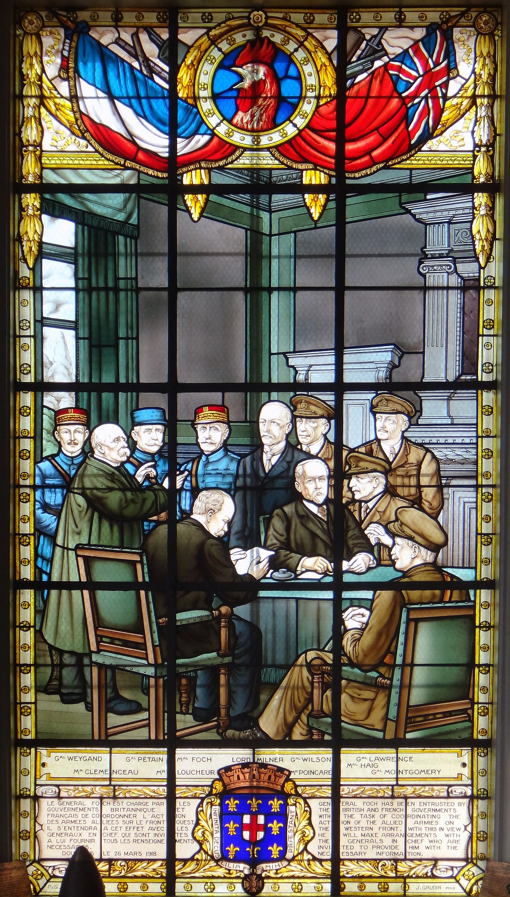

1918 : la fenêtre s'entrouvre
Décembre 1917. À l'Est, la jeune Russie soviétique signe l'armistice. Le traité de Brest-Litovsk (3 mars 1918) libère officiellement l'Allemagne d'un front entier — et de près de 50 divisions immobilisées depuis 1914.
21 mars 1918 — 4 h 40
en 5 heures sur le front britannique.
Bienvenue dans la dernière offensive Allemande.
Faites défiler ↓
Décembre 1917. À l'Est, la jeune Russie soviétique signe l'armistice. Le traité de Brest-Litovsk (3 mars 1918) libère officiellement l'Allemagne d'un front entier — et de près de 50 divisions immobilisées depuis 1914.
Avril 1917 : les États-Unis sont entrés en guerre. Au printemps 1918, 250 000 Doughboys débarquent chaque mois dans les ports français. À l'été : 1 million d'Américains au front. À l'automne : 2 millions.
Pour le général Erich Ludendorff, 1er Quartier-maître général allemand, le calcul est brutal : frapper avant l'été 1918, écraser les Britanniques et les Français avant que l'Amérique ne pèse vraiment. Sinon, la guerre est perdue.
C'est cette urgence stratégique qui va donner naissance à la Kaiserschlacht — la « bataille de l'Empereur » — quatre offensives massives en quatre mois, plus un dernier coup de dé en juillet.
Chapitre 02
Une doctrine tactique nouvelle pour un dernier va-tout.
01
Attaquer la jonction entre l'armée britannique (au nord) et française (au sud) — point de friction politique et logistique. Repousser les Britanniques vers la Manche, séparer les deux armées.
02
Troupes d'assaut formées à l'infiltration : avancer en petits groupes mobiles, contourner les points forts, laisser l'infanterie classique les réduire ensuite. Rupture avec les vagues d'assaut frontales.
03
Le colonel Georg Bruchmüller, surnommé « Durchbruchmüller » (« Müller-la-percée »), met au point un barrage court, intense, mélange explosifs + gaz, sans préparation longue. Effet de surprise total.
04
Michael (mars), Georgette (avril), Blücher-Yorck (mai), Gneisenau (juin) — puis le coup de grâce : le Friedensturm (juillet).
« Wir hauen ein Loch — das Übrige findet sich. »
« On perce un trou — le reste suivra. » — Ludendorff, janvier 1918
Chapitre 03 · Anatomie de l'offensive
20 mars 1918
Le front Ouest est figé depuis quatre ans.
Déplace le curseur ↓ ou clique sur une date.

Objet de mémoire
Le 26 mars 1918, en pleine débâcle face à Michael, les Alliés se réunissent en urgence à Doullens. Décision historique : Ferdinand Foch devient généralissime interallié — un seul chef pour coordonner Français, Britanniques et Américains. Ce vitrail commémoratif immortalise l'instant qui a changé le cours de la guerre.
Chapitre 04
Mars → juin 1918. Chaque opération devait être la percée décisive.
Opération MICHAEL
21 mars → 5 avril 1918 · Picardie
À 4 h 40, le 21 mars 1918, 6 000 canons ouvrent le feu. 1,1 million d'obus en cinq heures, explosifs et gaz mêlés. Le brouillard couvre l'assaut. La 5e armée britannique s'effondre.
En deux semaines, les Allemands avancent de 60 kilomètres — la plus grande percée du front Ouest depuis 1914. Ils visent Amiens, nœud ferroviaire vital. Mais l'épuisement et la logistique étirée freinent l'élan.
26 mars 1918 — Doullens. Sous le choc, Alliés nomment Foch généralissime interallié. Pour la première fois, un seul chef commande à la fois Français, Britanniques et Américains. L'offensive allemande vient de créer son pire ennemi.
Opération GEORGETTE
9 → 29 avril 1918 · Flandres / Lys
Ludendorff frappe maintenant en Flandres, sur la rivière Lys, pour pousser les Britanniques vers la Manche. La situation est si critique que Haig publie son ordre du jour fameux : « Back to the wall — les yeux dans les yeux, chacun doit combattre jusqu'au bout. »
Gain : ~20 km. Aucune percée stratégique. L'offensive est arrêtée le 29 avril. Premier échec partiel — mais l'usure côté allemand commence.
— Field Marshal Sir Douglas HaigWith our backs to the wall and believing in the justice of our cause, each one of us must fight on to the end.
Opération BLÜCHER-YORCK
27 mai → 6 juin 1918 · Chemin des Dames → Marne
La diversion devient triomphe : le Chemin des Dames cède en quelques heures. En une semaine, les Allemands avancent de 60 km et atteignent Château-Thierry sur la Marne, à 90 km de Paris. Le gouvernement envisage d'évacuer la capitale.
Mais la 2e division US (Belleau Wood, Château-Thierry) stoppe l'avance. Le « saillant de la Marne » est créé — magnifique sur la carte, cauchemardesque à défendre. Ludendorff vient de tendre la gorge à Foch.
Opération GNEISENAU
9 → 13 juin 1918 · Montdidier — Noyon
Cette fois, Foch est prêt. La défense élastique (Pétain) absorbe le choc. Une contre-attaque franco-américaine menée par le général Mangin stoppe net l'avance à 8 kilomètres.
Quatre opérations, quatre échecs stratégiques. L'armée allemande a perdu près de 600 000 hommes en trois mois. Ses Stoßtruppen, les meilleures unités, sont saignées. Et pourtant, Ludendorff prépare un dernier coup.
FRIEDENSTURM
15 → 17 juillet 1918 · Champagne / Marne
Le nom est tragiquement ironique. Ludendorff baptise ce coup « offensive pour la paix » — la dernière, censée forcer les Alliés à négocier. Plan : attaquer de part et d'autre de Reims pour encercler la ville et couper le front français en deux.
Mais Foch sait. Le renseignement français a capté les préparatifs. En Champagne, le général Gouraud applique la défense élastique : il évacue la première ligne. Le déluge allemand tombe… sur du vide.
18 juillet 1918 — Villers-Cotterêts. À l'aube, sans préparation d'artillerie, 225 chars Renault FT surgissent de la forêt avec la 10e armée du général Mangin. Le saillant de la Marne est attaqué par surprise sur son flanc ouest.
C'est le tournant absolu de la guerre. À partir de ce jour, l'armée allemande ne fait plus que reculer. 8 août 1918 : « Schwarzer Tag » à Amiens. 11 novembre 1918 : armistice de Rethondes. La Kaiserschlacht a tué l'Allemagne impériale.
Chapitre 06
0
pertes allemandes (mars → juillet 1918)
0
pertes alliées (mars → juillet 1918)
0 jours
entre la première percée et l'effondrement
0
l'armistice signé à Rethondes
La Kaiserschlacht n'aura été ni l'effondrement attendu des Alliés, ni la victoire éclair rêvée par Ludendorff. Elle aura été le suicide tactique de l'Allemagne impériale : en consumant ses meilleures troupes — les Stoßtruppen — sur des objectifs stratégiques flous, le haut commandement allemand a précipité l'effondrement qu'il voulait éviter.
Le 9 novembre 1918, Guillaume II abdique. Le 11, l'armistice est signé. La République de Weimar naît dans les ruines de l'offensive qui devait sauver le Reich.
Présenté par
Première Générale · 2026
Sources
« Le 8 août fut le jour noir de l'armée allemande. »
— Erich Ludendorff, Mémoires de guerre
FIN